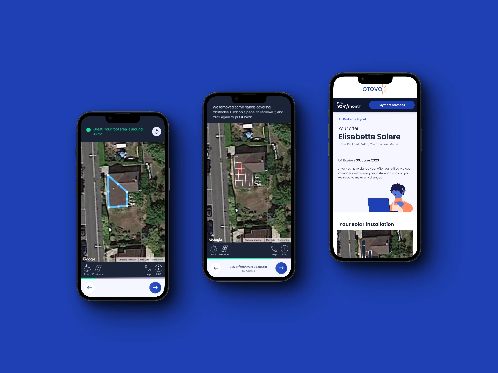
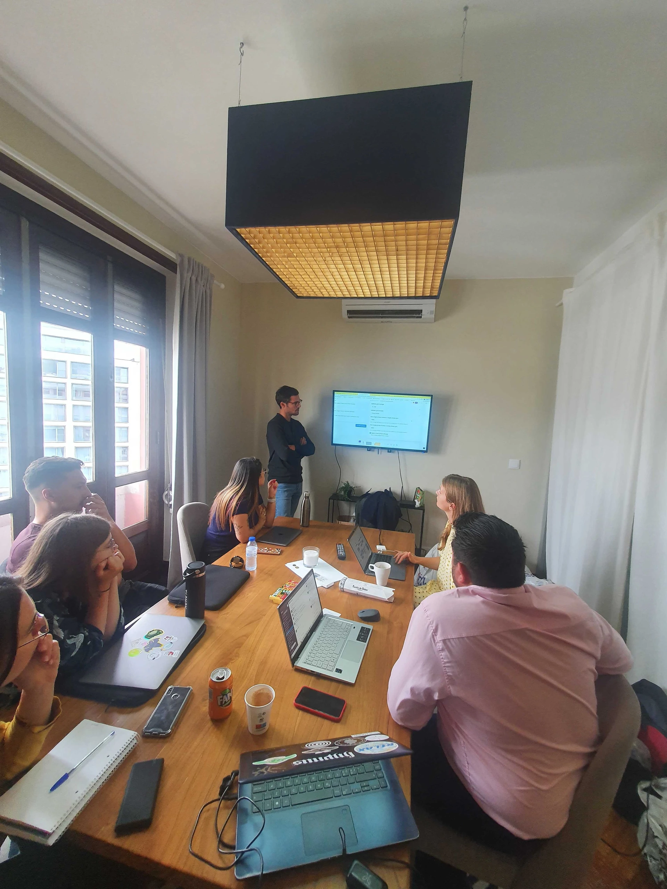

Self-checkout for residential solar: the customer in charge, never left alone.

+40%
conversion for customers who started self-checkout
13
markets, after a pilot in Sweden, France and Poland
Finalist
UX Nordic Award 2023
Problem
Buying solar meant handing over your details and waiting for a sales call. Customers who had already decided were slowed down by a process built for the undecided, but roofs, eaves and panel counts are hard to judge alone, so pure self-service risked costly wrong orders.
“He’s annoyed with having to give his contact details and can’t get an instant price.”
Interview, self-service customer
Research
Interviews with customers, sales agents and product managers, mapped into one journey covering the flow and the systems behind it. Then moderated remote tests with Swedish, French and Polish users, read next to funnel data and session recordings.
“He thinks the calc page has a lot of information and he doesn’t know what to do.” Information overload.
Usability test with a non-customer

From insight to design
Every finding was tied to a decision, so the team could see what changed and why.
“The surface drawing is challenging on mobile. Users are struggling with the drawing step, restarting the Tetris multiple times.”
Insight board, proof of concept
3 of 5 didn’t understand what to do at the roof-drawing step, and most never found the tutorial.
→Instant visual feedback while drawing: panels appear on the roof as the shape closes, and the tutorial became part of the step instead of a link.
3 of 5 struggled with the eave dropdown, and Swedish testers read “longest” instead of “lowest”.
→The eave was moved onto the map as a direct selection, with the wording rewritten and tested per market.
2 of 4 never noticed the panel count, and half only realised the point of the exercise late.
→Panel count and price were pulled into the persistent bottom bar, updating live with every change.
2 of 5 wanted a fallback to a person; sales agents feared unqualified self-served orders.
→A visible “talk to an agent” route at every step, plus qualification questions that route risky cases to sales before an offer exists.
4 of 5 were frustrated at having to restart a faulty shape from scratch.
→Panels became individually removable and the layout editable, so a wrong drawing is corrected rather than redone.
Solution
Assisted self-checkout: the customer draws the roof, picks panels and gets an instant offer, while a sales agent follows along and steps in the moment something stalls. Self-service where it is faster, humans where they add trust.
“Customers who chose to start the self-checkout process converted 40 % higher.”
Pilot result, Sweden, France and Poland
Learnings
Autonomy is not abandonment; the win came from a visible way back to a human.
A pilot in three markets settled an argument that had run for months.
A self-served sale no system recognises is not a sale, so the back stage mattered as much as the interface.
Some data is anonymised due to NDAs. Happy to walk through the details over a coffee: anastasia.buialo@gmail.com
Selvutsjekking for solenergi: kunden har kontrollen, men blir aldri overlatt til seg selv.
+40 %
konvertering for kunder som startet selvutsjekking
13
markeder, etter pilot i Sverige, Frankrike og Polen
Finalist
UX Nordic Award 2023
Problem
Å kjøpe solenergi betydde å legge igjen kontaktinfo og vente på en selger. Kunder som allerede hadde bestemt seg, ble bremset av en prosess laget for de usikre, men tak, takfot og antall paneler er vanskelig å vurdere alene, så ren selvbetjening kunne gi kostbare feilbestillinger.
“Han er irritert over å måtte oppgi kontaktopplysninger og ikke få en pris med en gang.”
Intervju, selvbetjeningskunde
Innsikt
Intervjuer med kunder, selgere og produktsjefer, samlet i én kundereise som dekket både flyten og systemene bak. Deretter modererte fjerntester med svenske, franske og polske brukere, lest sammen med traktdata og sesjonsopptak.
“Han synes kalkulatorsiden har mye informasjon, og vet ikke hva han skal gjøre.” Informasjonsoverbelastning.
Brukertest med en ikke-kunde
Fra innsikt til design
Hvert funn ble koblet til en beslutning, slik at teamet så hva som ble endret og hvorfor.
“Tegning av flaten er krevende på mobil. Brukerne sliter i tegnesteget og starter Tetrisen på nytt flere ganger.”
Innsiktsflate, proof of concept
3 av 5 forsto ikke hva de skulle gjøre i tegnesteget, og de fleste fant aldri veiledningen.
→Umiddelbar visuell tilbakemelding under tegning: panelene dukker opp på taket idet flaten lukkes, og veiledningen ble en del av steget i stedet for en lenke.
3 av 5 slet med nedtrekkslisten for takfot, og svenske testere leste "lengste" i stedet for "laveste".
→Takfoten ble flyttet ut på kartet som et direkte valg, med ordlyd skrevet om og testet per marked.
2 av 4 la aldri merke til antall paneler, og halvparten skjønte poenget med øvelsen for sent.
→Antall paneler og pris ble flyttet til den faste bunnlinjen, oppdatert live ved hver endring.
2 av 5 ønsket en vei tilbake til et menneske; selgerne fryktet ukvalifiserte selvbetjente ordrer.
→En synlig "snakk med en rådgiver" i hvert steg, pluss kvalifiseringsspørsmål som ruter risikable saker til salg før et tilbud finnes.
4 av 5 var frustrerte over å måtte starte en feil flate helt på nytt.
→Panelene ble mulige å fjerne enkeltvis og layouten redigerbar, slik at en feil tegning rettes i stedet for å gjøres om.
Løsning
Assistert selvutsjekking: kunden tegner taket, velger paneler og får tilbud umiddelbart, mens en selger følger med og hopper inn i det noe stopper. Selvbetjening der det går raskere, mennesker der de skaper tillit.
“Kunder som valgte å starte selvutsjekkingen, konverterte 40 % høyere.”
Pilotresultat, Sverige, Frankrike og Polen
Læring
Autonomi er ikke det samme som å bli forlatt; gevinsten lå i en synlig vei tilbake til et menneske.
En pilot i tre markeder avgjorde en diskusjon som hadde gått i månedsvis.
Et selvbetjent salg ingen systemer kjenner igjen, er ikke et salg; systemene bak betydde like mye som grensesnittet.
Noe data er anonymisert på grunn av NDA-er. Jeg går gjerne gjennom detaljene over en kaffe: anastasia.buialo@gmail.com